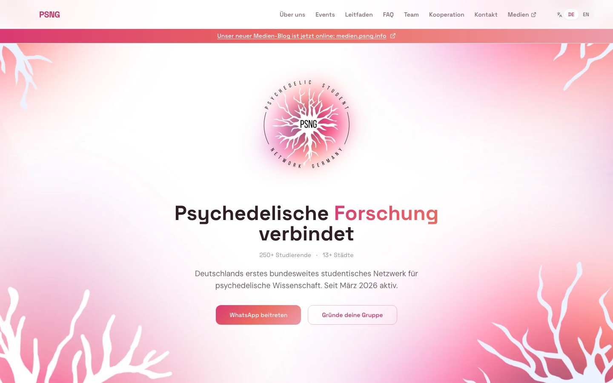
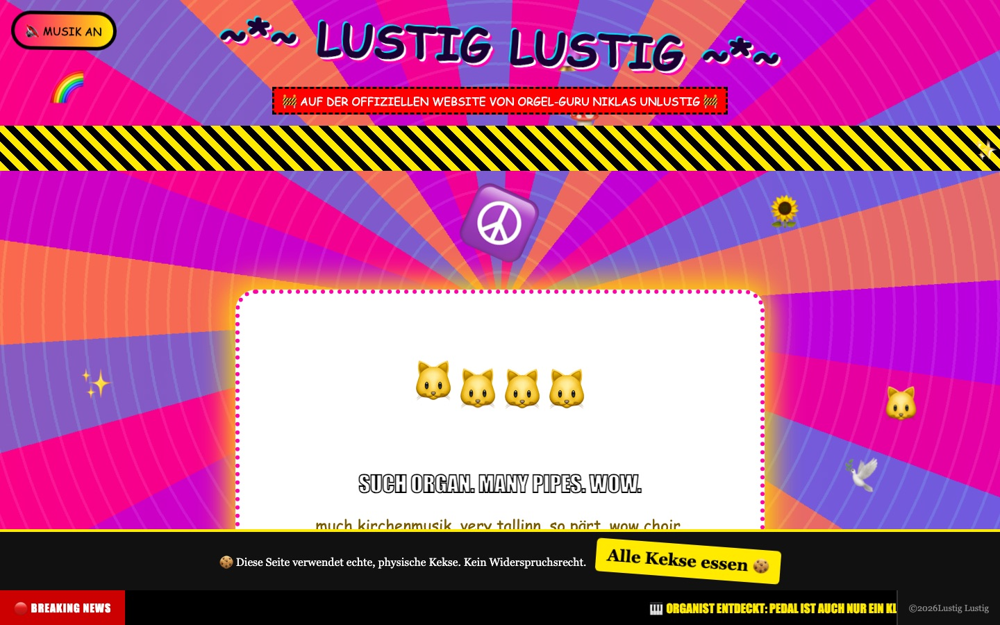
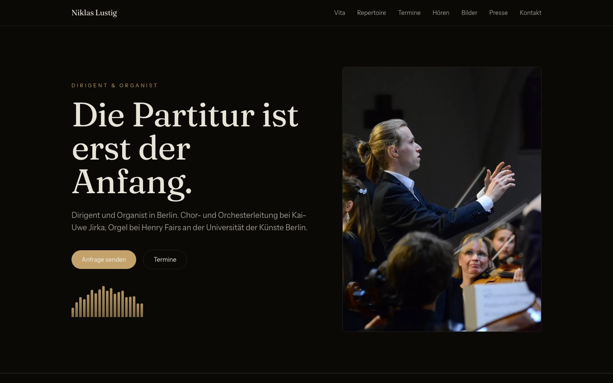
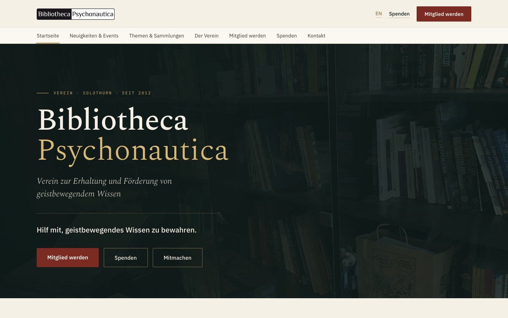

Psychedelic Student Network Germany
The website for PSNG, in German and English. Events, the team, an FAQ and a guide for starting a group in your own city. It replaced our old Google Sites page.
React · Vite · Tailwind
Sites I’ve built, mostly for groups I’m part of and for friends. I taught myself as I went.

The website for PSNG, in German and English. Events, the team, an FAQ and a guide for starting a group in your own city. It replaced our old Google Sites page.
React · Vite · Tailwind
A small site for our Berlin group. It mainly shows the next talk and gets people into the WhatsApp group.

A joke site for a friend who plays the organ. It’s meant to be terrible. Turn the music on.

A portfolio for the same friend, who’s a conductor and organist in Berlin. Bio, repertoire, dates, recordings and press.
Astro

A site for a library association in Solothurn that collects and preserves books on psychedelics and altered states.